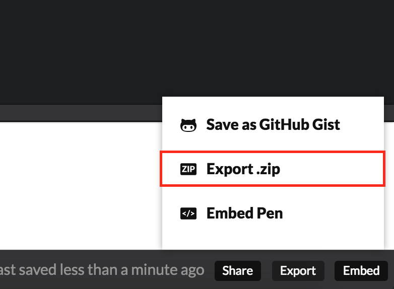

網站開發流程介紹
網站開發步驟
1. 網站規劃
2. 網頁設計
3. 程式開發
4. 網站部署
5. 內容維護
確認功能需求
確認功能需求
- 服務對象、風格、色系
服務對象、風格、色系
 http://www.newsweek.com/
http://www.newsweek.com/
服務對象、風格、色系
 http://riot.design/en/
http://riot.design/en/
確認功能需求
- 風格/色系
- 頁面項目
頁面項目
| 項目 | 內容 |
|---|---|
| 首頁版面 |
|
| 關於我們版面 |
|
確認功能需求
- 風格/色系
- 頁面項目
- 功能
功能
前台
| 項目 | 內容 |
|---|---|
| 會員註冊/登入 | 提供使用者進行會員註冊與登入 |
| 訂閱電子報 | 提供使用者輸入Email，並且定期寄送網站最新資訊 |
功能
後台
| 項目 | 內容 |
|---|---|
| 會員管理系統 | 提供管理者進行會員資訊管理 |
| 電子報管理系統 | 提供管理者進行電子報新增與發送 |
Wireframe
線框稿，定義網站基本的框架
Wireframe
Wireframe linkMockup
視覺稿、定義網站字體設計、按鈕樣式、扁平化
Mockup
Mockup link
網頁設計
- 設計稿
- 切板
程式開發
- html
- css
- javascript
- 後端程式
後端程式
- PHP
- ASP.NET
- node.js
- Ruby on Rails
網站部署
內容維護
- 網站內容的更新：
- 網站最新消息
- Banner更換
- 電子報設計與寄送
Q & A
工作環境架設教學介紹
即時預覽的網頁開發編輯器
建立專案
撰寫HTML區塊

撰寫CSS區塊

撰寫JS區塊

顯示網頁呈現畫面
改變畫面配置
選擇 Change View
分享Codepen
複製網址

輸出
Export.zip
